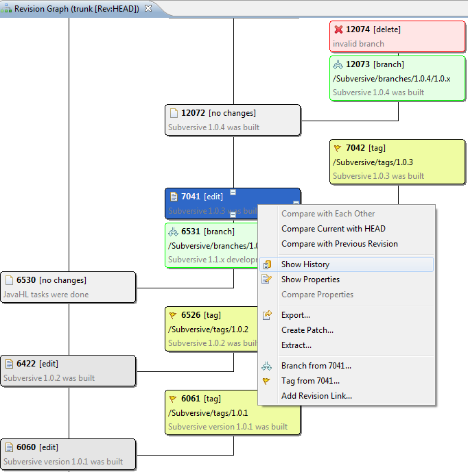
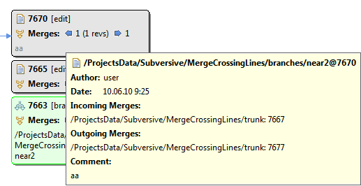
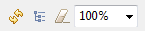

|
|
|
Revision Graph options:
You can specify whether to show merge info and other options in revision graph options dialog:| Option | Description | Default |
| Show all revisions | Specifies whether to show all revisions or filter them on predefined default criterions. This option can be useful for large graphs. | Disabled |
| Show merge info | Specifies whether to fetch from repository merge information and show it on revision graph. It's available only for SVN 1.5 and higher clients. Note that despite this option is enabled there can be servers which don't support merge information. | Enabled |
This is how 'SVN Revision Graph' looks like:
Merge information:
If you selected to show merge information and there were merges then merge information is presented on graph. Each revision node may have incoming and(or) outgoing merges which are shown on revision node by corresponding blue arrows directed to left or right. For each type of merges there's number near the arrow which means number of merges, for incoming merges there are also shown revision numbers (in brackets) affected by merges. By default, merge connections between nodes are not shown, as there can be lots of merge connections which can significantly complicate graph presentation and understanding. If you want to see merge connections for revision node you can either click on blue merge arrow on revision node or call corresponding action from node's context menu such as 'Show Outgoing Merges' or 'Show Incoming Merges'. In order to differ merge connections from general connections merge connections are shown in blue. If you want to hide merge connections for revision node you can either call corresponding context menu actions ('Hide Outgoing Merges' or 'Hide Incoming Merges') or call 'Clear Merge Connections' action from toolbar which hides all merge connections on graph. This is how merge information is presented:

Merge information is also shown on tooltip for revision node where you can see all merge paths and revisions:
Properties View:
There's an ability to display properties of selected revision node in Properties View. Open properties view, Window>Show View>Other..., select General>Properties and select interested revision node. This is how 'Properties View' for revision node looks like:

Known issues:
Toolbar
Refresh - contacts SVN repository and updates revision graph.
Clear Merge Connections - removes all merge connections if any from graph.
Show Only Revisions with Copies - filter out revisions which have modifications but don't have copies.
Zoom - allows to change zooming.
Pop-up menu
Open/Open With - opens the resource of current selected revision.
Compare with Each Other - compares to selected revisions of the resource.
Compare Current with HEAD - compares selected resource to HEAD.
Compare with Previous Revision - compares selected resource to previous revision.
Show History - shows SVN History View for a selected resource.
Show Properties - shows SVN Properties View for a selected resource.
Compare Properties - compare properties to selected revisions of the resource.
Show Annotation... - shows SVN Annotations View for a selected resource.
Export... - exports a selected resource to a local folder.
Create Patch... - creates a patch from a selected resource in compare with another URL or revision.
Extract... - extract a selected resource to a local folder.
Branch from - creates a branch from a selected revision.
Tag from - creates a tag from a selected revision.
Add Revision Link... - creates a revision link and adds it to a revisions folder.
Show Outgoing Merges - shows outgoing merges for revision node.
Show Incoming Merges - shows incoming merges for revision node.
Hide Outgoing Merges - hides outgoing merges for revision node.
Hide Incoming Merges - hides incoming merges for revision node.